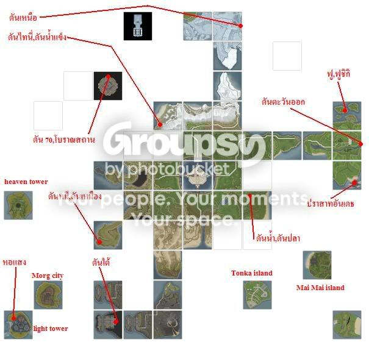

หน้า 246 จากทั้งหมด 296

โพสต์แล้ว:
จันทร์ 25 พ.ค. 2009 10:38 pmโดย ECO
(ps)smart เขียน:สิงไปไม่ได้นี่
แล้วงี้ตัวลูกก็ต้องทำหมดเลยอะเดอะ
ไม่ได้บอกว่าสิงเข้าโลกอื่นนะ
แค่สิงเข้า Sky Tower เอง
โพสต์แล้ว:
อังคาร 26 พ.ค. 2009 5:49 pmโดย ECO
ตอนตูไปมังกรอยู่ข้างหน้าตูเลย..
โพสต์แล้ว:
พฤหัสฯ. 28 พ.ค. 2009 6:17 amโดย ECO
มีคำถามค่ะ
label ใช้ทำอะไร?
wing mask(black) หาได้จากไหน?
ขอบคุณค่ะ

โพสต์แล้ว:
พฤหัสฯ. 28 พ.ค. 2009 6:45 amโดย ECO
label
ชุดว่ายน้ำสีน้ำเงินแบบเด็กประถมครับ
wing mask(black)
ได้จากบอสไก่ครับ
โพสต์แล้ว:
พฤหัสฯ. 28 พ.ค. 2009 7:27 pmโดย ECO
-คนหน้าตาดี- เขียน:label
ชุดว่ายน้ำสีน้ำเงินแบบเด็กประถมครับ
ใช้ทำเสื้อพละด้วย =w= (MurberLabel)
wing mask(black)
ได้จากบอสไก่ครับ
โพสต์แล้ว:
พฤหัสฯ. 28 พ.ค. 2009 7:33 pmโดย ECO
โกเล็มแคตตาล๊อกลงยังไงหรอคับ
โพสต์แล้ว:
พฤหัสฯ. 28 พ.ค. 2009 7:41 pmโดย ECO
ตอนที่ตั้งร้านจะมีปุ่ม Catalog ให้เอ็งกดน่ะ รอบนึงเสีย 500 น่อ
โพสต์แล้ว:
พฤหัสฯ. 28 พ.ค. 2009 7:41 pmโดย ECO
กดติ๊กถูก เสียเงิน500 ด้วยมั้ง ขายหรือซื้อนี่ล่ะ
โพสต์แล้ว:
พฤหัสฯ. 28 พ.ค. 2009 9:51 pmโดย ECO
ช่วยตอบทีนะจ้า ทำไมเครื่องเรามองเห็นโกเล็มปลามานมีเส้นๆออกมาจากตรงหางมันด้วยอ่า มีวิธีแก้มั้ยจ้า - -
โพสต์แล้ว:
พฤหัสฯ. 28 พ.ค. 2009 9:55 pmโดย ECO
(•Him•) เขียน:ช่วยตอบทีนะจ้า ทำไมเครื่องเรามองเห็นโกเล็มปลามานมีเส้นๆออกมาจากตรงหางมันด้วยอ่า มีวิธีแก้มั้ยจ้า - -
ขำทำนายว่า
เครื่องคุณไม่มีการ์ดจอ...
ถ้ามีก็จงอัพเดทไดรเวอร์ซะ
แต่คนที่มีการ์ดจอไม่เป็นหรอก
เพราะปัญหานี้จะเป็นกับคนที่ไหม่มีการ์ดจอ....
ถ้าไม่มีการ์ดจอ
ซื้อมาใส่ซะ หุหุ
โพสต์แล้ว:
พฤหัสฯ. 28 พ.ค. 2009 10:21 pmโดย ECO
มานมีการ์ดจอนะอัพเดดก็อัพเดดแล้วอ่าครับ และมานเป็นแค่เกมส์นี้เกมส์เดียว มานเป็นกับโกเล็มปลาทุกตัวเลยและที่น่าสงสัยคือตำแหน่งที่มานเป็นจะเหมือนกันทุกตัวเลย- -
โพสต์แล้ว:
พฤหัสฯ. 28 พ.ค. 2009 11:37 pmโดย ECO
wing mask(black) ดรอปจาก นกที่ป่าไมไมอะครับ
บอสไก่ดรอปแต่อันปกติที่ทำได้แต่ไม่ใช่สีดำ
โพสต์แล้ว:
พฤหัสฯ. 28 พ.ค. 2009 11:55 pmโดย ECO
Monzins เขียน:wing mask(black) ดรอปจาก นกที่ป่าไมไมอะครับ
บอสไก่ดรอปแต่อันปกติที่ทำได้แต่ไม่ใช่สีดำ
เอ้อนั่นล่ะ ลืมๆ - -..จำสลับกัน
โพสต์แล้ว:
ศุกร์ 29 พ.ค. 2009 8:52 amโดย ECO
ดันเจี้ยนที่คนทั่วไปเรียกติดปาก
Credit :
Lugia

โพสต์แล้ว:
ศุกร์ 29 พ.ค. 2009 1:16 pmโดย ECO
แปลกันตรงตัวดีแท้